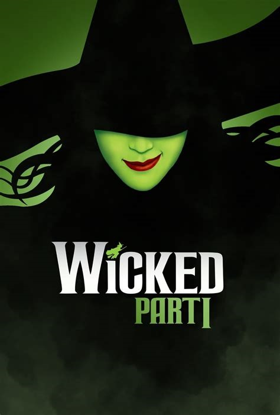
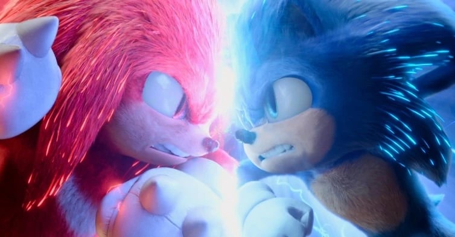

Mamonas Assassinas: O Filme
O filme biográfico sobre a banda Mamonas Assassinas é um dos mais esperados do ano em termos de cinema nacional. Protagonizado por Ruy Brissac, o longa aborda a trajetória da banda até o trágico acidente aéreo em 1996.
O filme biográfico sobre a banda Mamonas Assassinas é um dos mais esperados do ano em termos de cinema nacional. Protagonizado por Ruy Brissac, o longa aborda a trajetória da banda até o trágico acidente aéreo em 1996.
A franquia Um Lugar Silencioso ganhará uma prequel, explorando o início da invasão na Terra pelas criaturas sensíveis ao som.
O novo filme solo do Capitão América com Sam Wilson enfrentando desafios enquanto se adapta ao cargo e interage com personagens como Betty Ross e o vilão Líder.
Deadpool retorna em sua terceira aventura, mantendo o humor insano. Desta vez, conta com a companhia especial do mutante Wolverine, interpretado novamente por Hugh Jackman.
O novo filme da franquia Mad Max é um spin-off baseado na personagem Imperator Furiosa, interpretada por Anya Taylor-Joy, mostrando sua jornada antes de se tornar uma guerreira nas estradas áridas da Terra.
A sequência da animação da Pixar, Divertida Mente, acompanha a jovem Riley agora como uma adolescente, lidando com emoções mais intensas e complexas.
Mufasa: The Lion King conta a história do reinado do pai de Simba, explorando sua ascensão ao trono com a ajuda de aliados e personagens clássicos como Rafiki, Timão e Pumba.
A sequência do Coringa promete elevar os níveis de loucura com a adição da psiquiatra Harleen Quinzel (Arlequina), interpretada por Lady Gaga.
Wicked, o musical, terá sua história dividida em duas partes. A primeira parte conta a história da Bruxa Má do Oeste, Elphaba Thropp.
O último capítulo da trilogia baseada no mascote da Sega promete trazer de volta Sonic, Tails, Knuckles e, como indicado na cena pós-créditos, o personagem Shadow.
